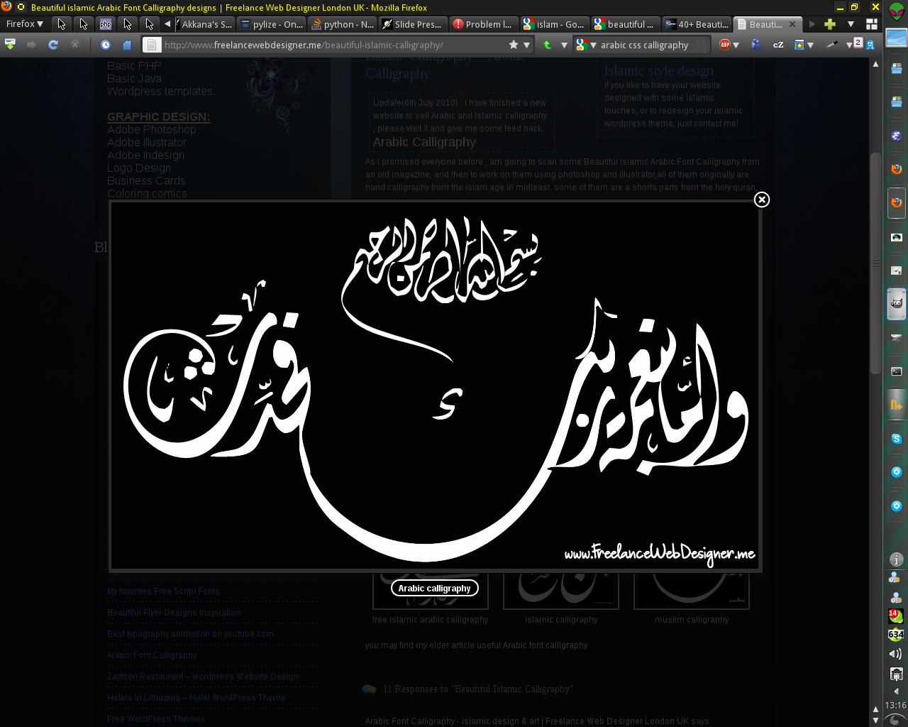
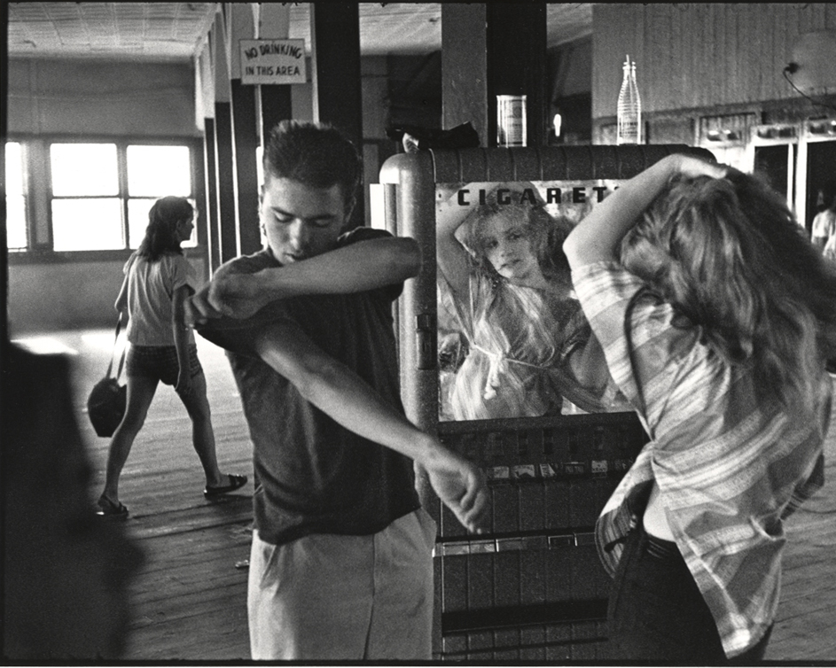

Previous
|
Next
Le Web-design, c'est d'abord du design
Un métier vieux comme l'image
Un medium numérique, une tradition séculaire
L'œuil du lynx, l'oreille du chat
Une approche d'artiste, une rigueur de technicien

